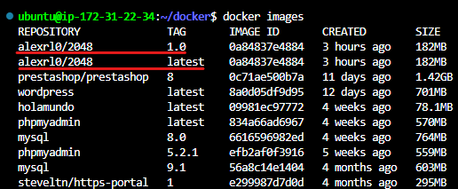
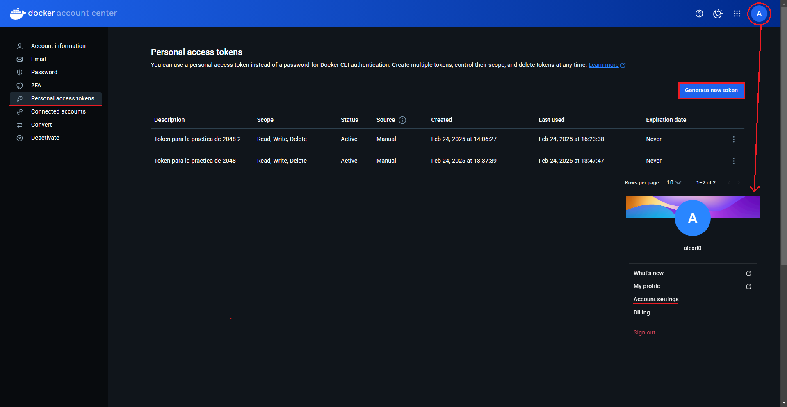
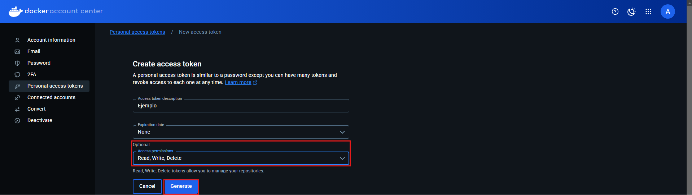
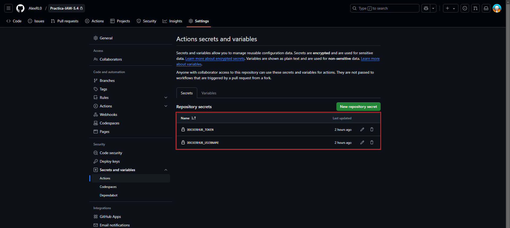
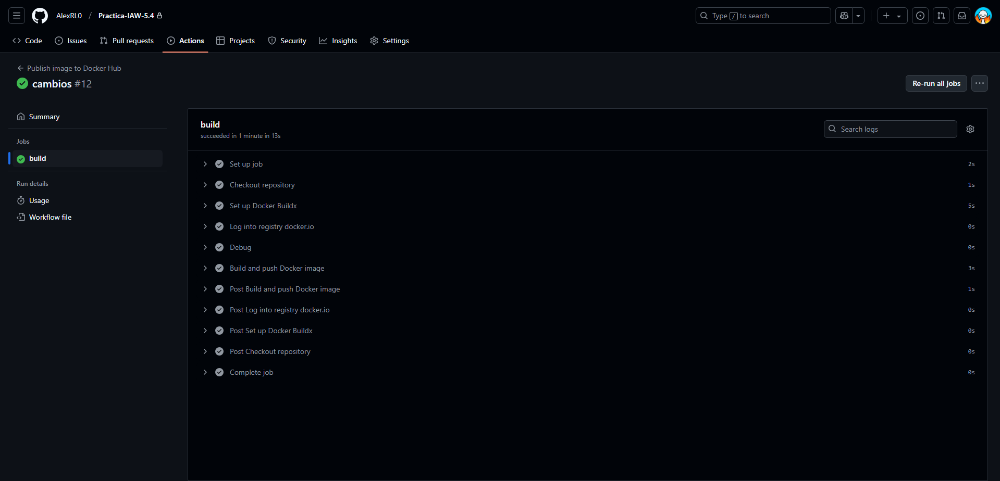
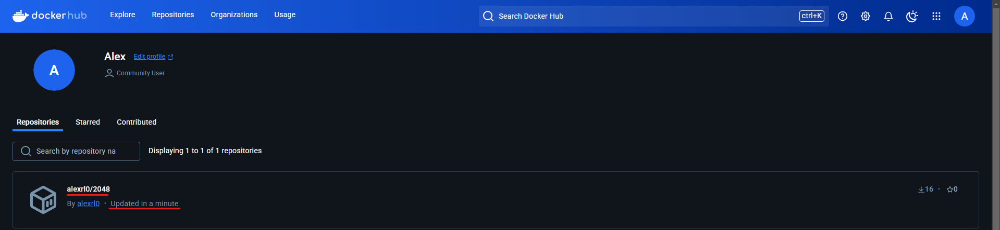

Practica-IAW-5.4- «Dockerizar» una web estática y publicarla en Docker Hub.
1. Comando usado para montar la imagen del dockerfile y comprobar que la imagen esta montada correctamente
docker build -t alexrl0/2048 .
docker images
2. Comando usado para crear un tag a la imagen ya montada
docker tag alexrl0/2048 alexrl0/2048:1.0

3. Comando para iniciar sesión en dockerhub
docker login -u alexrl0
[!IMPORTANT]
Al iniciar sesión con este comando, nos pedirá una contraseña, en vez de poner una contraseña, tenemos que crear un token en dockerhub con permisos de lectura, escritura y ejecución y pegarlo para poder iniciar sesión.
vamos por pasos, lo primero es inicar sesión en dockerhub con la cuenta de github, una vez iniciada la sesión, le damos click a nuestro perfil y se nos desplegará una ventana flotante como aparece en la imagen señalado con una flecha, cuando estemos en esa ventana, le damos a Accounts settings y nos aparecerá lo que sale en la imagen. Una vez dentro, le damos a Personal access tokens y dentro, le damos a create new token.

Cuando le damos a crear el nuevo token, nos aparecerá una ventana como la que se ve en la imagen, nos pedirá un nombre para el token, una fecha de caducidad que en mi caso no le he puesto y lo último pero lo más importante los permisos de la misma, tenemos que ponerle de lectura, escritura y ejecución porque si no, docker no va a poder subir la imagen a dockerhub.

4. Archivo dockerfile que se va a ejecutar
FROM ubuntu:24.04
RUN apt update && \
apt install nginx -y && \
apt install git -y && \
rm -rf /var/lib/apt/lists/*
RUN git clone https://github.com/josejuansanchez/2048.git /app && \
mv /app/* /var/www/html/
EXPOSE 80
CMD ["nginx", "-g", "daemon off;"]
5. Archivo action de github que automatiza todo el proceso
name: Publish image to Docker Hub
# This workflow uses actions that are not certified by GitHub.
# They are provided by a third-party and are governed by
# separate terms of service, privacy policy, and support
# documentation.
on:
push:
branches: [ "main" ]
# Publish semver tags as releases.
tags: [ 'v*.*.*' ]
workflow_dispatch:
env:
# Use docker.io for Docker Hub if empty
REGISTRY: docker.io
# github.repository as <account>/<repo>
#IMAGE_NAME: ${{ github.repository }}
IMAGE_NAME: 2048
IMAGE_TAG: latest
jobs:
build:
runs-on: ubuntu-latest
permissions:
contents: read
packages: write
steps:
- name: Checkout repository
uses: actions/checkout@v3
# Set up BuildKit Docker container builder to be able to build
# multi-platform images and export cache
# https://github.com/docker/setup-buildx-action
- name: Set up Docker Buildx
uses: docker/setup-buildx-action@f95db51fddba0c2d1ec667646a06c2ce06100226 # v3.0.0
# Login against a Docker registry except on PR
# https://github.com/docker/login-action
- name: Log into registry ${{ env.REGISTRY }}
uses: docker/login-action@343f7c4344506bcbf9b4de18042ae17996df046d # v3.0.0
with:
registry: ${{ env.REGISTRY }}
username: ${{ secrets.DOCKERHUB_USERNAME }}
password: ${{ secrets.DOCKERHUB_TOKEN }}
# This action can be used to check the content of the variables
- name: Debug
run: |
echo "github.repository: ${{ github.repository }}"
echo "env.REGISTRY: ${{ env.REGISTRY }}"
echo "github.sha: ${{ github.sha }}"
echo "env.IMAGE_NAME: ${{ env.IMAGE_NAME }}"
# Build and push Docker image with Buildx (don't push on PR)
# https://github.com/docker/build-push-action
- name: Build and push Docker image
id: build-and-push
uses: docker/build-push-action@0565240e2d4ab88bba5387d719585280857ece09 # v5.0.0
with:
context: .
push: ${{ github.event_name != 'pull_request' }}
tags: ${{ env.REGISTRY }}/${{ secrets.DOCKERHUB_USERNAME }}/${{ env.IMAGE_NAME }}:${{ env.IMAGE_TAG }}
cache-from: type=gha
cache-to: type=gha,mode=max
Este archivo de trabajo de GitHub Actions construye y publica una imagen Docker en DockerHub.
name: Publish image to Docker Hub
Eventos de Activación
El flujo de trabajo se activa con los siguientes eventos:
on:
push:
branches: [ "main" ]
tags: [ 'v*.*.*' ]
workflow_dispatch:
Variables de Entorno
Estas son las variables de entorno utilizadas en el flujo de trabajo:
env:
REGISTRY: docker.io
IMAGE_NAME: 2048
IMAGE_TAG: latest
Jobs y Pasos
Build Job
El trabajo build se ejecuta en un sistema ubuntu-latest con los siguientes pasos:
-
Checkout del Repositorio
yaml - name: Checkout repository uses: actions/checkout@v3 -
Configurar Docker Buildx
yaml - name: Set up Docker Buildx uses: docker/setup-buildx-action@v3.0.0 -
Inicio de Sesión en el Registro Docker
yaml - name: Log into registry ${{ env.REGISTRY }} uses: docker/login-action@v3.0.0 with: registry: ${{ env.REGISTRY }} username: ${{ secrets.DOCKERHUB_USERNAME }} password: ${{ secrets.DOCKERHUB_TOKEN }}Es necesario crear dos secrets en el repositorio de GitHub con los mismos nombres que aparecen en el archivo .yml:DOCKERHUB_USERNAMEyDOCKERHUB_TOKEN, indicándole para el del usuario el de DockerHub y para el token, el token que creamos anteriormente en DockerHub.  -
Paso de Depuración
yaml - name: Debug run: | echo "github.repository: ${{ github.repository }}" echo "env.REGISTRY: ${{ env.REGISTRY }}" echo "github.sha: ${{ github.sha }}" echo "env.IMAGE_NAME: ${{ env.IMAGE_NAME }}" -
Construir y Publicar la Imagen Docker
yaml - name: Build and push Docker image id: build-and-push uses: docker/build-push-action@v5.0.0 with: context: . push: ${{ github.event_name != 'pull_request' }} tags: ${{ env.REGISTRY }}/${{ secrets.DOCKERHUB_USERNAME }}/${{ env.IMAGE_NAME }}:${{ env.IMAGE_TAG }} cache-from: type=gha cache-to: type=gha,mode=max
5. Comprobación de que se hace y se publica en DockerHub
 